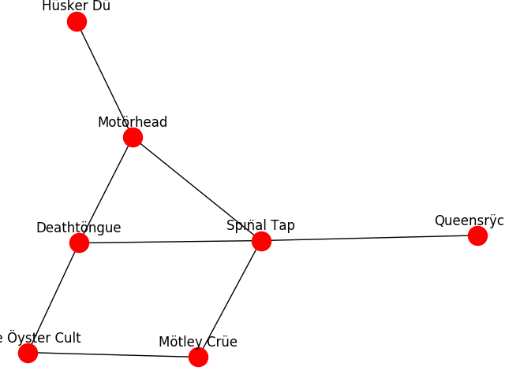

Note
Click here to download the full example code
Heavy Metal Umlaut¶
Example using unicode strings as graph labels.
Also shows creative use of the Heavy Metal Umlaut: https://en.wikipedia.org/wiki/Heavy_metal_umlaut
Out:
[u'Blue \xd6yster Cult', u'Mot\xf6rhead', u'H\xfcsker D\xfc', u'M\xf6tley Cr\xfce', u'Sp\u0131n\u0308al Tap', u'Deatht\xf6ngue', u'Queensr\xffche']
# Author: Aric Hagberg (hagberg@lanl.gov)
# Copyright (C) 2006-2018 by
# Aric Hagberg <hagberg@lanl.gov>
# Dan Schult <dschult@colgate.edu>
# Pieter Swart <swart@lanl.gov>
# All rights reserved.
# BSD license.
import matplotlib.pyplot as plt
import networkx as nx
try:
hd = 'H' + unichr(252) + 'sker D' + unichr(252)
mh = 'Mot' + unichr(246) + 'rhead'
mc = 'M' + unichr(246) + 'tley Cr' + unichr(252) + 'e'
st = 'Sp' + unichr(305) + 'n' + unichr(776) + 'al Tap'
q = 'Queensr' + unichr(255) + 'che'
boc = 'Blue ' + unichr(214) + 'yster Cult'
dt = 'Deatht' + unichr(246) + 'ngue'
except NameError:
hd = 'H' + chr(252) + 'sker D' + chr(252)
mh = 'Mot' + chr(246) + 'rhead'
mc = 'M' + chr(246) + 'tley Cr' + chr(252) + 'e'
st = 'Sp' + chr(305) + 'n' + chr(776) + 'al Tap'
q = 'Queensr' + chr(255) + 'che'
boc = 'Blue ' + chr(214) + 'yster Cult'
dt = 'Deatht' + chr(246) + 'ngue'
G = nx.Graph()
G.add_edge(hd, mh)
G.add_edge(mc, st)
G.add_edge(boc, mc)
G.add_edge(boc, dt)
G.add_edge(st, dt)
G.add_edge(q, st)
G.add_edge(dt, mh)
G.add_edge(st, mh)
# write in UTF-8 encoding
fh = open('edgelist.utf-8', 'wb')
fh.write('# -*- coding: utf-8 -*-\n'.encode('utf-8')) # encoding hint for emacs
nx.write_multiline_adjlist(G, fh, delimiter='\t', encoding='utf-8')
# read and store in UTF-8
fh = open('edgelist.utf-8', 'rb')
H = nx.read_multiline_adjlist(fh, delimiter='\t', encoding='utf-8')
for n in G.nodes():
if n not in H:
print(False)
print(list(G.nodes()))
pos = nx.spring_layout(G)
nx.draw(G, pos, font_size=16, with_labels=False)
for p in pos: # raise text positions
pos[p][1] += 0.07
nx.draw_networkx_labels(G, pos)
plt.show()
Total running time of the script: ( 0 minutes 0.045 seconds)